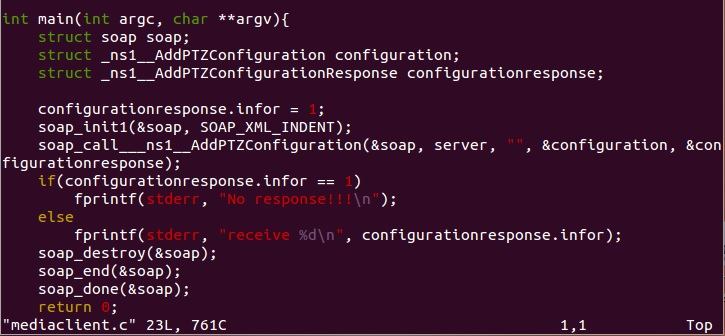
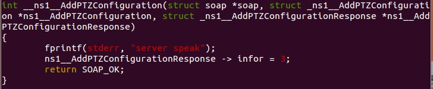

目前在抓影像部分，由於camera還未拿到，所以server端內容的部分無法執行，所以只能了解整個傳送的方向及server那邊的資料型態會是如何接收跟傳送。
這邊DEMO client server雙向溝通讓大家看
-
client端呼叫server函式部分

AddPTZConfiguration 為server端的涵式，configuration為client端傳送的資料，configurationresponse為server端回傳的資料，在這邊我預設回傳資料的infor為1。 -
server端函式定義

server端首先先印出訊息代表收到client要求，接著更改configurationresponse的infor，再把整個struct傳回client(struct裡的定義)
-
server端執行
-
client端執行
我的程式在 Launchpad 有完整的程式碼
目前我讀的streaming文件大致上的概念就是這樣，client端資料包成一個struct後，呼叫server函式同時將struct傳給server，server運作完將response struct同時傳回client。
大方向大概是這樣client端會先向server取得profile與URI，之後就能開始發出streaming的要求，server端就會開始傳送。
之後拿到camera後先學會van給的相關文件，然後再進行原本預定要進行的向server抓影像以及IP camera 影像格式部分。
最後再跟大家說聲抱歉....這活動一年只有一次而已，我真的超級想參加，除了抱歉還是抱歉。